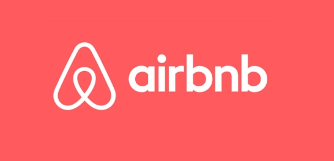

Data Cleaning in SQL
In this project, I worked with a world layoffs dataset and used SQL Server to clean, standardize, and transform the raw data into an analysis.

Industrial Engineer well versed in SQL, Python, Tableau and Power BI @Lindokuhle
In this project, I worked with a world layoffs dataset and used SQL Server to clean, standardize, and transform the raw data into an analysis.

In this project, I performed Exploratory Data Analysis (EDA) on a global layoffs dataset using SQL Server.

This project showcases an interactive Tableau dashboard that analyzes Cape Town Airbnb listings to uncover insights into pricing trends, neighbourhood performance, room type distribution, and listing availability.
In this project, I utilized Power BI to analyze professional survey data and created an interactive dashboard to explore job roles, salaries, experience levels, programming languages, and other professional trends.
In this project, I worked with a Call Customer dataset and used Python Jupyter Notebook to clean, standardize, and transform the raw data into a structured dataset for analysis.

In this project, I conducted an exploratory data analysis on world population data to identify trends and patterns.
In this project, I used Python to perform web scraping and extract data on the largest companies in the United States.